Discover, Stay Updated, and Support the Music Scene with Music Magazines
Music magazines are more than just pages filled with artist interviews and album reviews—they’re a
gateway
to discovering new sounds, staying informed on the latest industry news, and supporting the music world.
Whether you’re looking for in-depth features on emerging artists, insights into music trends, or
exclusive
behind-the-scenes stories, these publications keep you connected to the ever-evolving world of music. By
engaging with music magazines, you’re not only expanding your own musical horizons but also helping
sustain
the industry that brings your favorite tunes to life.
Here are some good reads!
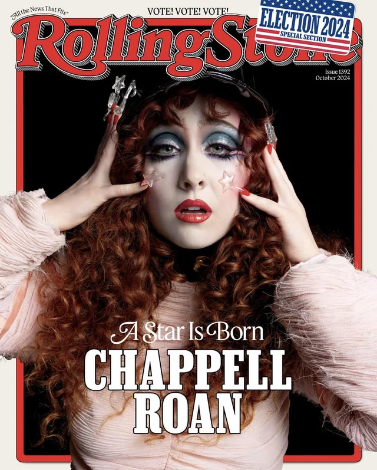
Rolling Stone Founded in 1967, Rolling Stone is one of the most iconic music magazines,
covering rock, pop, and mainstream music alongside politics and pop culture. Known for its
in-depth features, artist interviews, and striking cover stories, the magazine has played a
significant role in shaping public discourse on music and entertainment. Over the years, Rolling
Stone has expanded its scope to include film, television, and social issues, making it a go-to
publication for both music lovers and cultural commentators.
Shown: Rolling Stone Issue #xxx
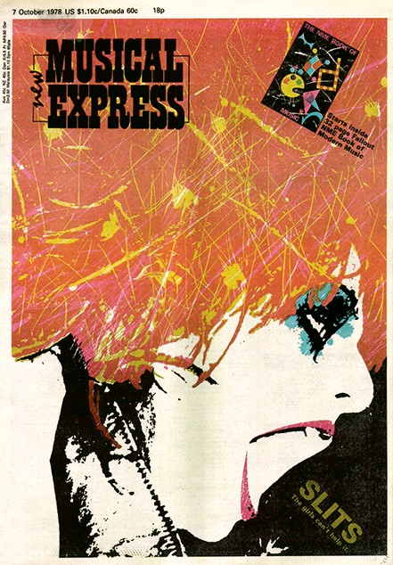
New Musical Express Launched in 1952, NME became a staple of British music
journalism, championing indie, alternative, and emerging artists. While its print edition ended
in 2018, the magazine continues as a digital publication, maintaining its reputation for sharp
reviews, exclusive interviews, and breaking music news. Throughout its history, NME has played a
pivotal role in promoting new talent and influencing the indie music scene, making it a
must-read for those looking to stay ahead of music trends.
Shown: NME Issue #xxx
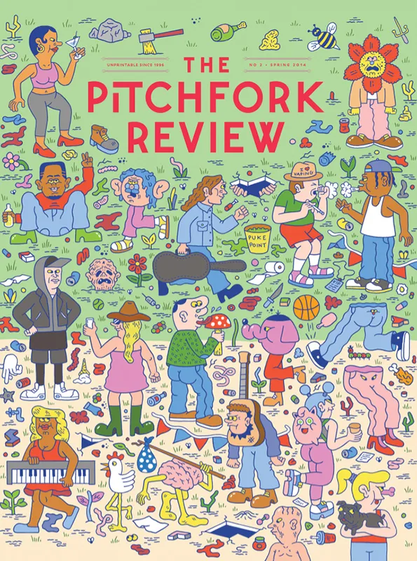
Pitchfork Founded in 1995, Pitchfork is one of the most influential online music
publications, specializing in indie, alternative, electronic, and experimental music. Its
rigorous album reviews, detailed festival coverage, and deep-dive features have helped shape
modern music criticism. Known for its numerical rating system, Pitchfork can make or break an
album’s reception, giving it a powerful voice in the industry. With a commitment to uncovering
underground talent, the magazine remains a major force in the digital music landscape.
Shown: Pitchfork Issue #xxx
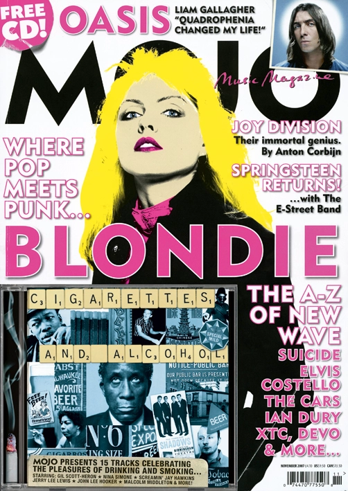
MOJO Since its launch in 1993, MOJO has established itself as a premium magazine
dedicated to classic rock, folk, and alternative music. Its long-form journalism, in-depth
retrospectives, and carefully curated artist interviews set it apart from mainstream
publications. Aimed at serious music fans, MOJO often includes exclusive CDs with its print
issues, offering curated playlists and rare recordings. The magazine’s deep appreciation for
music history and artistry makes it a favorite among dedicated audiophiles.
Shown: Mojo Issue #xxx
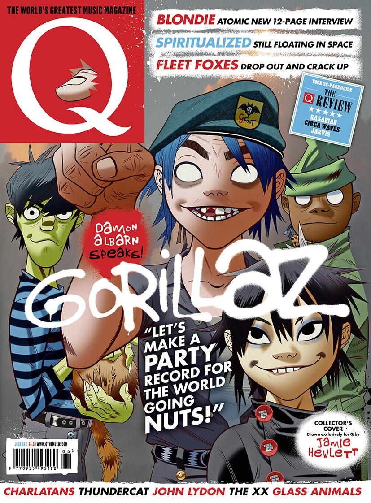
Q Magazine First published in 1986, Q Magazine was known for its high-quality interviews,
engaging reviews, and comprehensive coverage of pop, rock, and indie music. While it ceased
publication in 2020, its archives remain an essential resource for music journalists and fans. Q
was respected for its artist-centric approach, often featuring in-depth profiles of both
mainstream and alternative musicians. Its legacy lives on in the influence it had on music
journalism and the standards it set for modern publications.
Shown: Q Magazine Issue #xxx
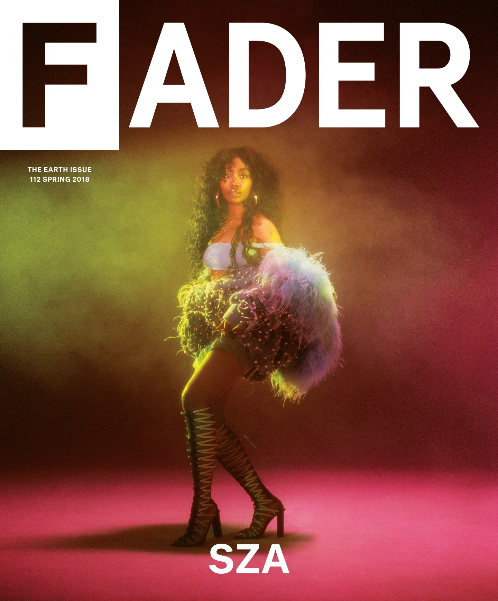
The FADER Founded in 1999, The FADER focuses on hip-hop, R&B, and electronic music, with
a strong emphasis on discovering emerging artists. Its editorial style blends music journalism
with high-end photography, creating a visually striking and culturally relevant publication.
Known for its ability to spot rising talent before mainstream media, The FADER is a trusted
source for music lovers seeking fresh sounds and new trends. The magazine's forward-thinking
approach continues to shape the way new artists are introduced to global audiences.
Shown: The FADER Issue #xxx
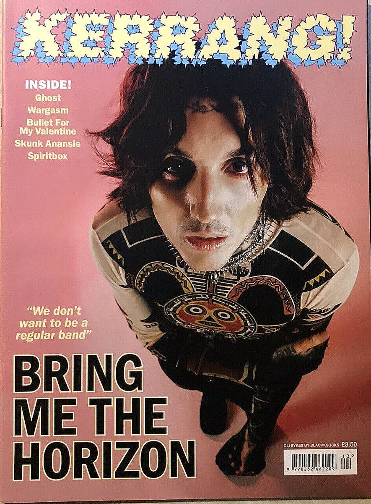
Kerrang! A cornerstone of rock journalism since 1981, Kerrang! is the go-to magazine for
fans of punk, metal, and hard rock. With its bold design, passionate writing, and deep
connection to the heavy music community, Kerrang! has maintained a loyal readership for decades.
It covers everything from underground metal bands to mainstream rock acts, providing a mix of
reviews, interviews, and exclusive behind-the-scenes content. For those who live and breathe
rock music, Kerrang! remains an essential publication.
Shown: Kerrang! Issue #xxx
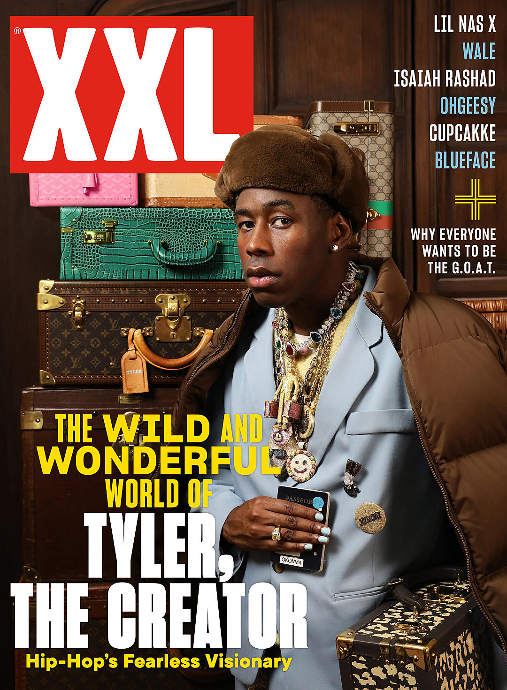
XXL Since its inception in 1997, XXL has been a leading voice in hip-hop journalism,
covering rap music, culture, and lifestyle. Best known for its annual XXL Freshman Class list,
which highlights the most promising up-and-coming rappers, the magazine has become a major
tastemaker in the hip-hop industry. With a mix of artist interviews, music reviews, and fashion
coverage, XXL provides a comprehensive look at the evolving hip-hop landscape, making it an
essential read for rap fans.
Shown: XXL Issue #xxx
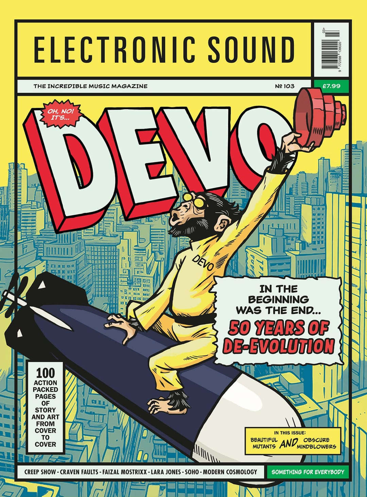
Electronic Sound Launched in 2013, Electronic Sound is dedicated to electronic, ambient,
and experimental music, catering to fans of synths, modular setups, and digital production. The
magazine explores the history and future of electronic music, featuring interviews with pioneers
and innovators in the field. With beautifully designed print issues and in-depth articles on
gear, sound design, and music culture, Electronic Sound is a must-read for electronic music
enthusiasts and producers alike.
Shown: Electronic Sound Issue #xxx
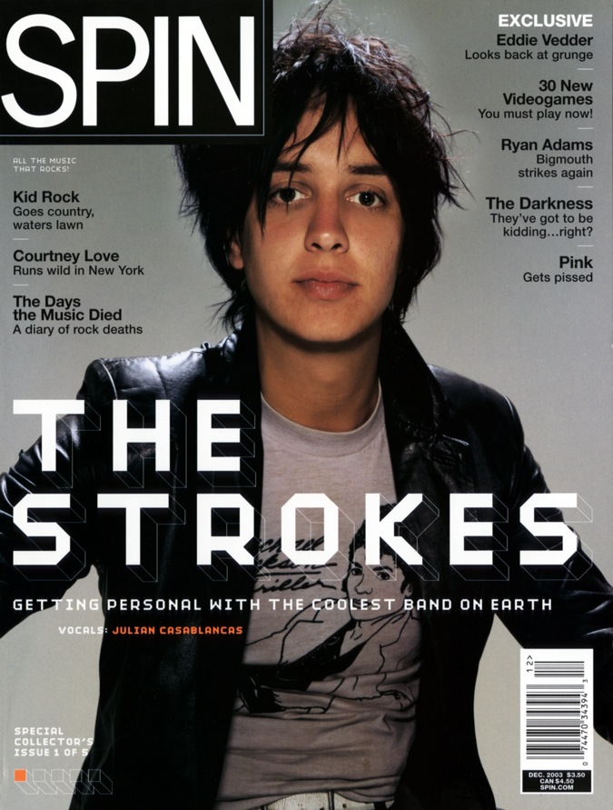
SpinFounded in 1985, Spin is a U.S.-based music magazine known for its eclectic coverage
of rock, hip-hop, and alternative music. Over the years, Spin has earned a reputation for its
engaging features, in-depth album reviews, and investigative journalism. The magazine has always
been a champion of new music and emerging artists, providing readers with insights into the
broader cultural impact of music. Though it transitioned to a digital-only format in recent
years, Spin continues to be an influential publication in the music industry, focusing on
trends, industry news, and artist profiles.
Shown: Clash Issue #xxx
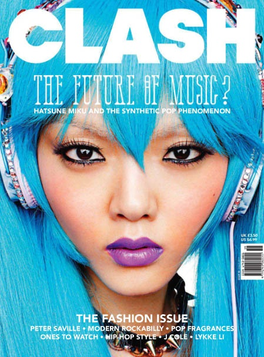
ClashLaunched in 2004, Clash is a UK-based music magazine that covers a wide range of
genres, from indie and rock to electronic and hip-hop. With a focus on the intersection of
music, fashion, and culture, Clash often features emerging artists alongside established stars,
making it a great resource for readers looking for diverse musical experiences. The magazine's
sharp editorial voice, combined with its stylish layout and focus on creativity, makes it one of
the most visually appealing music publications. It covers everything from interviews and reviews
to lifestyle trends, presenting music as a cultural force.
Shown: Clash Issue #xxx
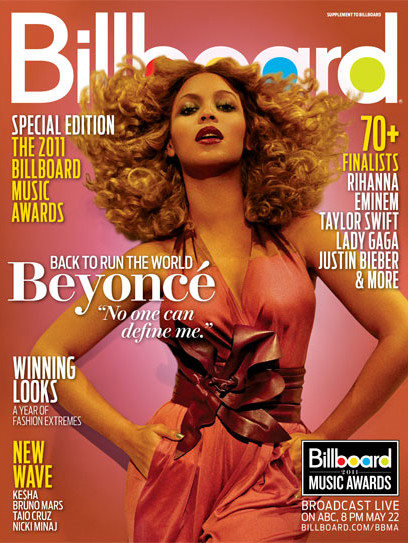
BillboardFounded in 1894, Billboard started as a trade publication focused on the
entertainment and advertising industries, it has evolved into a comprehensive magazine that
covers a wide range of topics, from pop and rock to country, hip-hop, and Latin music. The
magazine offers articles, artist profiles, and in-depth industry analysis, making it a key
resource for both music professionals and fans alike. With a digital presence that includes
video interviews, podcasts, and breaking news, Billboard remains a crucial player in the music
world.
Shown: Billboard Issue #xxx
Join the Community
Want to discover new tracks and share your favorites? Follow me on Spotify!
Thanks for Stopping By! 🎶
Keep listening, keep discovering, and let the music play on! 🎧✨